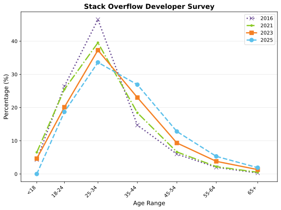
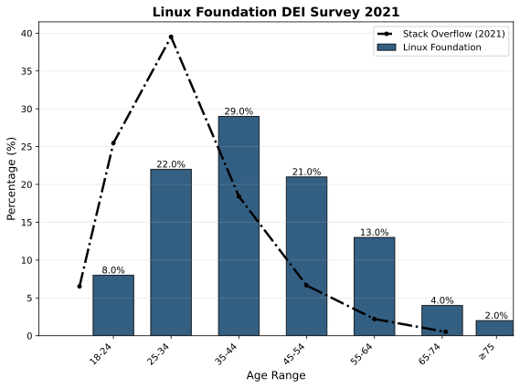
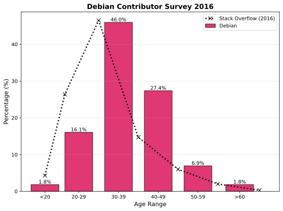
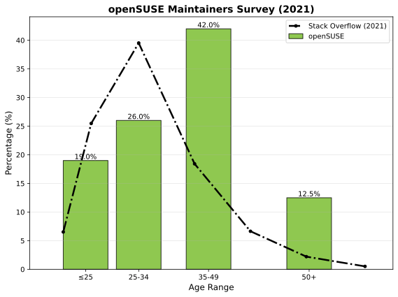
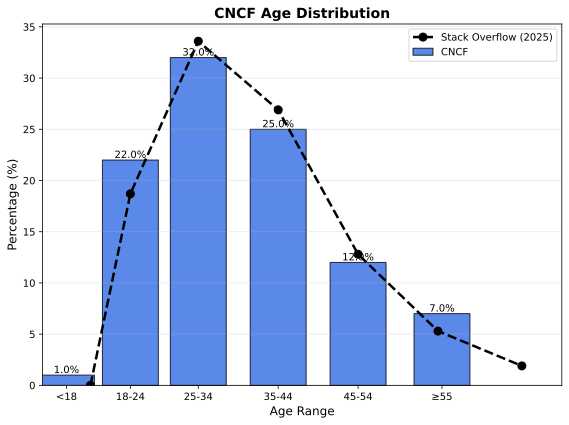
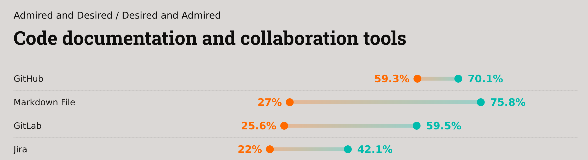
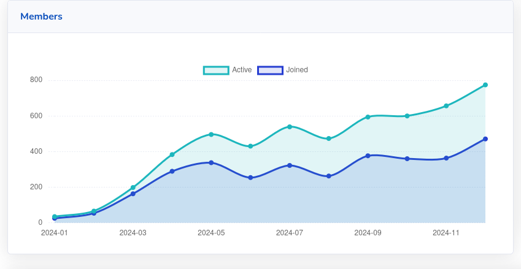
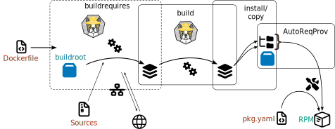

Commoditizing the Build
How Containers Save Our Contributor Base
who -u
Dan Čermák
| Fullstack Developer @SUSE | |
| i3 SIG, Package maintainer | |
| Developer Tools, Testing and Documentation, Home Automation | |
| https://dancermak.name | |
| dcermak | |
| @Defolos@mastodon.social | |
| @defolos.bsky.social |
Outline
Where are we?






What do Developers want?


Why aren't we desired?
- our tooling & platforms aren't cool anymore
- our values aren't cool anymore
- 🤖 LLMs are not trained on our tooling
- building a distribution is hard™ and solved
Omarchy
- Opinionated Arch Linux spin with Hyprland
- Community on Github & Discord

Universal Blue
This is a tool that allows cloud infrastructure people to use their skills to help the Linux desktop
uBlue - Who We Are
Stack
- bootc +
Dockerfile - Github & Github Actions
- Community on Discord and Discourse
Contributors

Take Away
Developers like:
- Github
- Discord
- opinionated distributions
- their tooling (Bash + Docker )
Can we use more container tooling?
The Build Recipe
Summary: Extensible editor for structured binary data
Name: poke
Version: 4.3
Release: %autorelease
License: GPL-3.0-or-later AND GFDL-1.3-no-invariants-or-later
URL: https://www.jemarch.net/poke
Source0: https://ftp.gnu.org/gnu/%{name}/%{name}-%{version}.tar.gz
Source1: https://ftp.gnu.org/gnu/%{name}/%{name}-%{version}.tar.gz.sig
BuildRequires: emacs
BuildRequires: gcc
BuildRequires: gc-devel
%description
GNU poke is an interactive, extensible editor for binary data. Not
limited to editing basic entities such as bits and bytes, it provides
a full-fledged procedural, interactive programming language designed
to describe data structures and to operate on them.
%prep
%{gpgverify} --keyring='%{SOURCE2}' --signature='%{SOURCE1}' --data='%{SOURCE0}'
%autosetup
%build
%define _lto_cflags %{nil}
%configure
%make_build
%check
make check
%install
%{make_install}
rm -f %{buildroot}/%{_infodir}/dir
rm -f %{buildroot}%{_libdir}/libpoke.a
rm -f %{buildroot}%{_libdir}/libpoke.la
%files
%{_bindir}/%{name}
%{_bindir}/poked
%{_bindir}/pokefmt
%{_bindir}/pk-bin2poke
%{_bindir}/pk-jojopatch
%{_bindir}/pk-strings
%{_infodir}/poke.info*.*
%{_mandir}/man1/%{name}.1*
%{_mandir}/man1/poked.1*
%{_mandir}/man1/pokefmt.1*
%doc AUTHORS ChangeLog NEWS README TODO
%license COPYING
%changelog
%autochangelog
Is it that much different to this?
ARG VERSION=4.3
ARG DIST
FROM fedora-rpm-buildroot:${DIST} as buildrequires
WORKDIR /src/
COPY poke-${VERSION}.tar.gz .
COPY poke-${VERSION}.tar.gz.sig .
RUN dnf -y install emacs gcc gc-devel nbdkit make
FROM localhost/poke-buildrequires as builder
RUN rpmdev-extract poke-${VERSION}.tar.gz
WORKDIR /src/poke-${VERSION}
RUN ./configure; \
make build; \
make check
RUN make install PREFIX=/usr/local
FROM fedora-rpm-buildroot:${DIST} as poke
LABEL org.opencontainers.image.version=${VERSION}
LABEL org.opencontainers.image.url="https://www.jemarch.net/poke"
LABEL org.opencontainers.image.title="Extensible editor for structured binary data"
LABEL org.opencontainers.image.description="GNU poke is an interactive, extensible editor for binary data."
LABEL org.opencontainers.image.licenses="GPL-3.0-or-later AND GFDL-1.3-no-invariants-or-later"
COPY --from=builder /usr/local/bin /usr/bin
Introducing: dcermak/roci
builds rpms from a Dockerfile
- sections ⇒ stages
%files⇒COPY --from=builder- macros ⇒ build arguments, scripts, ENV variables
- Preamble ⇒
LABEL+ config file - scriptlets ⇒ config file
mock/obs-build⇒buildah
Issues to tackle
- dependency generation (
AutoReqProv) - reproducible builds
- debuginfo
- changelogs
- macros
- file lists

Macros
- Turing complete m4 & cpp inspired language
- embedded Lua interpreter & shell expansion
Typical usage:
- variables:
%build_cflags - conditionals:
%if %cond %endif - "functions":
%pytest - sections:
%prep,%build - declarative build system & specparts
Filelists
%files -f my-list.txt
%{_bindir}/%{name}
%config %{_sysconfdir}/%{name}.defaults
%config(noreplace) %{_sysconfdir}/%{name}
%doc README
%license COPYING
What's a package?
What's a OCI Image?
RPM + OCI

{
"schemaVersion": 2,
"mediaType": "application/vnd.oci.image.manifest.v1+json",
"artifactType": "application/vnd.rpm.package.v7",
"config": {
"mediaType": "application/vnd.rpm.package.header.v1+json",
"digest": "sha256:b5b2b2c507a0944348e0303114d8d93aaaa081732b86451d9bce1f432a537bc7",
"size": 7023
},
"layers": [
{
"mediaType": "application/vnd.oci.image.layer.v1.tar+zstd",
"digest": "sha256:9834876dcfb05cb167a5c24953eba58c4ac89b1adf57f28f2f9d09af107ee8f0",
"size": 32654
}
],
"subject": {
"mediaType": "application/vnd.oci.image.manifest.v1+json",
"digest": "sha256:5b0bcabd1ed22e9fb1310cf6c2dec7cdef19f0ad69efa1f392e94a4333501270",
"size": 7682
}
}
RPM-MD Repositories
└── os
├── Packages
│ └── 0
│ ├── 0ad-0.27.1-4.fc43.x86_64.rpm
│ └── 0ad-data-0.27.1-2.fc43.noarch.rpm
└── repodata
├── <checksum>-filelist.xml.zck
├── <checksum>-other.xml.zck
├── <checksum>-primary.xml.zck
└── repomd.xml
primary.xml
<?xml version="1.0" encoding="UTF-8"?>
<metadata xmlns="http://linux.duke.edu/metadata/common" xmlns:rpm="http://linux.duke.edu/metadata/rpm" packages="77664">
<package type="rpm">
<name>0ad</name>
<arch>x86_64</arch>
<version epoch="0" ver="0.27.1" rel="4.fc43"/>
<checksum type="sha256" pkgid="YES">3f2334239f14e388571e001bbc966db7f23ad04583c5bbd2156fa1cf71f55add</checksum>
<!-- snip -->
<location href="Packages/0/0ad-0.27.1-4.fc43.x86_64.rpm"/>
<format>
<!-- snip -->
<rpm:sourcerpm>0ad-0.27.1-4.fc43.src.rpm</rpm:sourcerpm>
<rpm:header-range start="29152" end="67261"/>
<rpm:provides>
<rpm:entry name="0ad" flags="EQ" epoch="0" ver="0.27.1" rel="4.fc43"/>
<!-- snip -->
</rpm:provides>
<rpm:requires>
<rpm:entry name="/usr/bin/sh"/>
<rpm:entry name="0ad-data" flags="EQ" epoch="0" ver="0.27.1"/>
<!-- and more -->
</rpm:requires>
<file>/usr/bin/0ad</file>
</format>
</package>
RPM-MD in OCI?
{
"schemaVersion": 2,
"mediaType": "application/vnd.oci.image.manifest.v1+json",
"artifactType": "application/vnd.rpm.md+json",
"config": {
"mediaType": "application/vnd.oci.empty.v1+json",
"digest": "sha256:44136fa355b3678a1146ad16f7e8649e94fb4fc21fe77e8310c060f61caaff8a",
"size": 2
},
"layers": [
{
"mediaType": "application/vnd.rpm.md+json",
"digest": "sha256:e258d248fda94c63753607f7c4494ee0fcbe92f1a76bfdac795c9d84101eb317",
"size": 123456789
}
],
"subject": {
"mediaType": "application/vnd.oci.image.manifest.v1+json",
"digest": "sha256:5b0bcabd1ed22e9fb1310cf6c2dec7cdef19f0ad69efa1f392e94a4333501270",
"size": 7682
}
}
Call to Action!
Rethink our tooling to simplify onboarding for the next generation